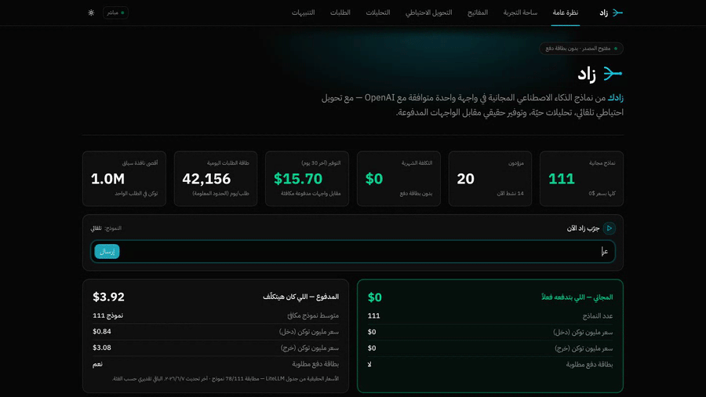
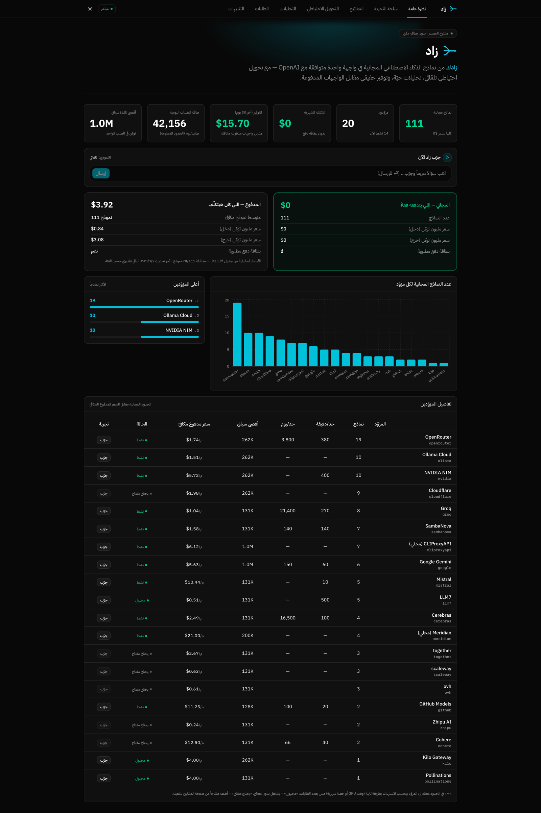

كل نماذج الذكاء الاصطناعي المجانية
خلف نقطة واحدة.
زاد بيجمع الـ free tiers من 17+ مزوّداً في endpoint واحد متوافق مع OpenAI — تحويل احتياطي تلقائي، تحليلات حيّة، وتوفير حقيقي. مفاتيحك مشفّرة على سيرفرك.
from openai import OpenAI client = OpenAI( base_url="http://localhost:3001/v1", api_key="<مفتاح-زاد>", ) resp = client.chat.completions.create( model="auto", messages=[{"role": "user", "content": "أهلاً!"}], ) print(resp.choices[0].message.content)

3 حواجز بتمنع الشركات من استخدام الذكاء الاصطناعي
التكلفة
اشتراكات وفواتير per-token بتكبر فجأة وتوقف المشاريع الصغيرة.
الخصوصية
مفيش راحة إن بيانات عملائك تروح لطرف تالت على السحابة.
الارتباط بمزوّد
لو غيّر أسعاره أو وقع، تطبيقك يقع معاه — بلا بديل.
زاد بيحلّ التلاتة — نماذج مجانية + استضافة ذاتية + 17 مزوّداً بمفتاح واحد وتحويل تلقائي.
كل اللي تحتاجه لموجّه ذكاء اصطناعي
متوافق مع OpenAI
بدّل base_url بس — أي SDK أو أداة بتشتغل على طول.
تحويل احتياطي ذكي
يرتّب النماذج بالذكاء/السرعة/الميزانية ويقفز للي بعده عند الفشل.
تسعير حقيقي + توفير
من جدول LiteLLM — يوريك كام كنت هتدفع لو على واجهة مدفوعة.
تحليلات حيّة
الطلبات، زمن الاستجابة، التوكنز، الأخطاء — تتحدّث لحظياً عبر SSE.
إشعارات تليجرام
مفتاح جديد · مزوّد وقع/رجع · ملخص يومي · طفرة أخطاء — تُضبط من الواجهة.
مزوّدون مخصّصون
أضف أي خدمة متوافقة مع OpenAI وعدّل رابطها live (Ollama · vLLM · LM Studio).
اكتشف 140 مزوّداً
صفحة «اكتشف» تستعرض 5,140 موديل من models.dev — كلكة واحدة لاستيراد أي مزوّد بكل موديلاته.
متوافق مع opencode
اطلب /api/registry/opencode-snippet → الصق في opencode.json → كل موديلاتك متاحة في opencode.
استخدمه في أي تطبيق
متوافق مع OpenAI — يشتغل مع أي SDK. اختار لغتك، وبدّل بين قراءة المفتاح من .env أو مباشرةً.
من الصفر للتشغيل في 3 خطوات
سجّل في مزوّد مجاني
Groq · Cerebras · Google · Mistral وغيرهم — تسجيل مجاني بدون بطاقة دفع.
الصق المفتاح في زاد
من صفحة المفاتيح — يتحقّق منه فوراً ويتخزّن مشفّراً. كرّر لأي عدد مزوّدين.
استخدم بمفتاح واحد
وجّه تطبيقاتك لـ /v1 بمفتاح زاد الموحّد — والباقي عليه.
شوفه شغّال
عرض حيّ من اللوحة — التحويل الاحتياطي والتحليلات في العمل.

شغّله على نظامك في دقائق
الخطوة الوحيدة المختلفة هي تثبيت Node.js ≥ 20 — بعدها الأوامر واحدة على كل الأنظمة.
brew install node git
curl -fsSL https://deb.nodesource.com/setup_20.x | sudo -E bash - sudo apt install -y nodejs git
winget install OpenJS.NodeJS.LTS Git.Git
git clone https://github.com/ahmedvnabil/zad.git zad && cd zad npm install cp .env.example .env # ثم ضع ENCRYPTION_KEY (انظر README) npm run build && node server/dist/index.js # افتح http://localhost:3001 🎉
ابدأ تستخدم الذكاء الاصطناعي بـ $0
مفتوح المصدر، مستضاف ذاتياً، وجاهز للمجتمع العربي.